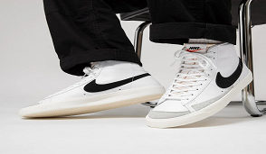

ASM WEB1013

NLà sản phẩm thiết yếu hàng ngày ngay lập tức kể từ khi ra mắt vào năm 1972, Nike Blazer mang đến một thiết kế gọn gàng và đã duy trì vị thế mang tính biểu tượng của nó kể từ đó. Trưởng thành từ một đôi giày cao cổ bằng vải đơn giản, Nike Blazer đã được tưởng tượng lại với màu sắc và chất liệu mới không biết bao nhiêu lần. Một điều rõ ràng là nó đã là một tác phẩm kinh điển từ ngày đầu tiên.
Converse Chucks Lift Archive Print - “Làn gió mới” cho giày sneaker Converse nữ Converse Chuck Taylor All Star Lift Archive Print “thổi vào” phong cách thời trang thường ngày của bạn một “làn gió mới” với đế Platform đầy ấn tượng. Đôi giày sneaker Converse nữ này với kiểu dáng cổ thấp năng động, thoải mái sẽ giúp các nàng tự tin hơn khi sử dụng. Bên cạnh đó, phần dây giày quen thuộc còn được điểm xuyến bằng họa tiết da báo ấn tượng. Mang lại một sự tinh nghịch, phá cách cho phong cách người mang.
Điện thoại: 1800.0080
Email: drake@gmail.com